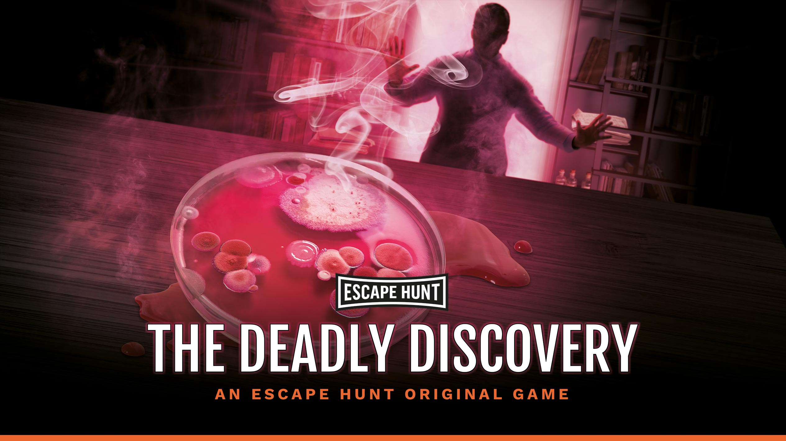
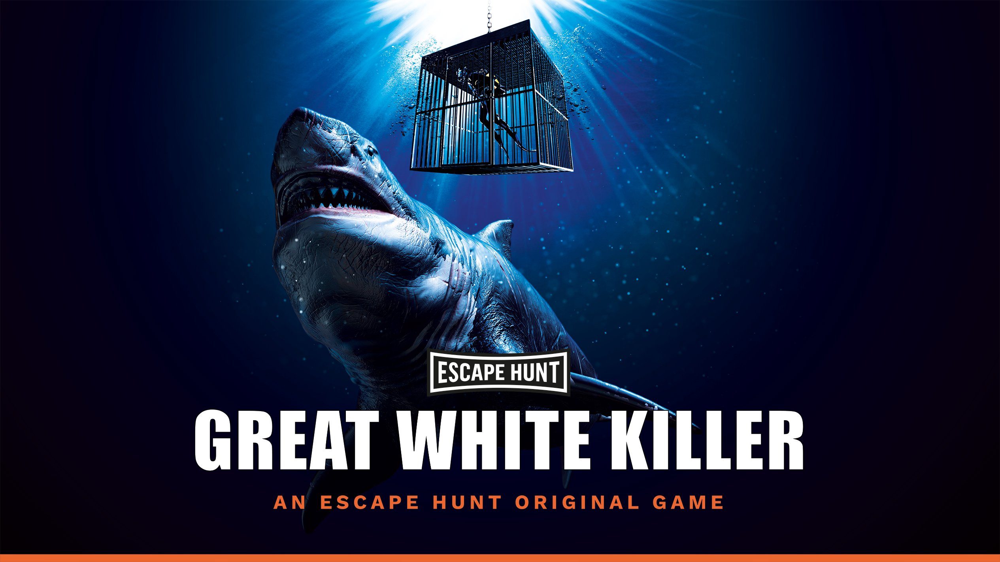

Welcome Reception
The conference reception will be held from 7pm on Monday 2nd December 2019 at the National Wine Centre (the main conference venue).
Conference Dinner
The Biometrics by the Botanic Gardens conference dinner will be held on Thursday 5th December 2019 from 7:30pm at the Adelaide Hills Convention Centre, in Hahndorf.
Transport
Busses will leave the National Wine Centre by approximately 7pm on Thursday evening. The dinner venue is about a 30 minute drive into the Adelaide Hills. There will be two possible return times leaving the Dinner venue at 10:30pm and 11:30pm, returning to the National Wine Centre.
About the venue
It’s not by chance that they were recently awarded the “Best Business Event Venue in Australia” title at the 2017 and 2018 Qantas Australian Tourism Awards – At Adelaide Hills Convention Centre they provide everything one needs for a successful conference.
Located just 20 minutes from Adelaide’s CBD and 40 mins from Adelaide airport, it’s the perfect location to bring your guests, even if they’re travelling from interstate. Give them a unique conference experience by holding it in Hahndorf – one of South Australia’s most iconic towns in the picture-perfect Adelaide Hills region.
At The Adelaide Hills Convention Centre their 5 Star Chefs select the very best in local South Australian produce to create a culinary experience to fit any theme.
Social Outings
All to be held Wednesday afternoon as per the program.
Sir Ronald Fisher in Adelaide
1:30 – 4:30pm
A guided library tour, talk and afternoon tea in the Rare Collection of the Barr Smith Library to see the work by Fisher preserved in the library and learn about his last years in Adelaide, 1959 – 1962.
This will follow by a short stroll from the University through North Adelaide to St Peter’s Cathedral and a guided tour there to visit the place of Sir Fisher ashes and hear about the significance of that for the Cathedral.
Cost: $20 pp, including afternoon tea.
Contact person: Ms Annie Conway
Indoor Bouldering
2:00 – 4:00pm
Bouldering is a form of rock climbing that is performed on small rock formations or artificial rock walls, known as boulders, without the use of ropes or harnesses. While it can be done without any equipment, most climbers use climbing shoes to help secure footholds, chalk to keep their hands dry and provide a firmer grip, and bouldering mats to prevent injuries from falls. A 2-hour bouldering session will take place at the Adelaide Bouldering Club. No experience is required and professional instruction and demonstration will be provided.
Also, for the climbing equipment, we have:
- Bouldering shoes hire available
- Bouldering chalk available
- No harness required
- Gym clothes and water are required
Cost: $20 pp, including shoes hire fees and transport
Contact person: Mrs Wendy Li
Wine tasting in the Fleurieu Peninsula (Tour full)
12:45 - 6:30pm
A true journey of discovery into McLaren Vale that explores a mix of boutique producers and Australian icons, including the avant-garde Rubix Cube inspired, d’Arenberg Cube. The Cube is the most creative cellar door in the country, a combination of surrealist museum and cellar door all wrapped up in one, with sweeping views of McLaren Vale from its top floor. At Samson Tall and Bekkers you’ll meet the owners themselves, take a tour of their facilities and get intimate insights into the style of their winemaking.
See here for some example images.
Cost: $145 pp, includes all entrance fees, tickets and transfers
Contact person: Mr Peter Kasprzak
Schedule
| TIME | ACTIVITY | INCLUSIONS |
|---|---|---|
| 12:45pm | Pick up CBD | Transfers in two Luxury Land Rover Discovery 4x4 vehicles. |
| 1:30pm | Bekkers Fine Wine | Boutique, world class wines with finesse and texture, made by husband & wife team Toby & Emmanuelle Bekkers. Enjoy a private tasting with either Emmanuelle or Toby overlooking their McLaren Vale estate, and learn the secrets behind this most prestigious label. |
| 2:30pm | d’Arenberg Cube | d’Arenberg is a founding member of Australia’s First Families of Wine and the flamboyant five-story Cube complex erupts from the ground in the heart of its original McLaren Vale vineyard. Take a self- guided tour of the Alternate Realities Museum and a tasting in the sensational Cube Cellar Door. |
| 3:45pm | Red Poles Art Gallery | Take a tour of their famous Indigenous Art Gallery, see the artworks of different aboriginal peoples and learn their stories. |
| 4:15pm | Samson Tall | Visit Samson Tall Winery, situated in Bethany Chapel, the original vineyard site of Wirra Wirra’s Church Block. Samson Tall epitomises the modern style of McLaren Vale, with a select range of single vineyard wines. Enjoy a tasting and winery tour with owner and winemaker Paul Wilson. |
| 5:15pm | Silver Sands Beach Drive | Take a 4WD tour down Silver Sands Beach to see this famous strip of white, squeaky-fine sand, soaking up majestic views of the Fleurieu coastline and spectacular biodiversity. |
| 6:30pm | Arrive CBD |
Young Statisticians Event
Two intriguing games

Rescue a kidnapped scientist before his secret deadly formula is exploited.
It’s 1941 and Australian scientist Howard Florey has been running clinical trials for penicillin. During his trials he created a penicillin-resistant bacteria. Florey has now been kidnapped and his deadly formula is at risk of falling into the wrong hands.Enter his home, find the formula and destroy it before it’s too late.

Locked in a shark cage on the ocean floor – can you escape the Great White Killer?
A dive crew has disappeared off the coast of Port Lincoln, and Captain Rocks claims they were taken by Great White Sharks. There are rumours that he and his crew were on the hunt for lost treasure, and you and your team of detectives think something smells fishy…Under the guise of being his new crew, you are taking a cage dive with Captain Rocks to investigate. Are there really killer sharks on the loose, or is it something more sinister? Escape the shark cage and solve the case before the sharks come circling…
Cost: Free for Young Statisticians (Sponsored by the Biometry Hub). Includes welcome drink on arrival.
Contact person: Mrs Wendy Li
Date and Time: Tuesday 3rd December, 7:30 - 9:30pm
Location: Leaving from the national Wine Centre at 7:00pm after the Poster session, we will walk to the Escape Hunt Venue.